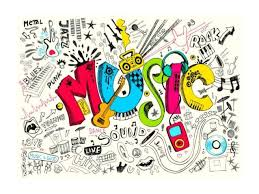

MY FAVORITE MUSIC
Escrito el por SILVIA SALAZAR
La Historia de la Música es muy amplia, ya que en ella se recogen todos los datos que han existido sobre la música desde el principio de los tiempos.Por ello, la dividimos en partes para que sea más fácil su estudio. Cada una de estas etapas corresponden a un periodo concreto de la Historia Universal, pero hay que tener en cuenta que las fechas que sitúan el fin de un periodo y el principio de otro son relativas y por eso sólo nos tienen que servir como referencia.
“Si no fuera físico, probablemente sería músico. A menudo pienso en música. Vivo mis sueños en música. Veo mi vida en términos musicales. No puedo decir si habría podido hacer alguna pieza creativa de importancia en la música, pero sí sé que lo que más alegría me da en la vida es mi violín”. Albert Einstein.
Un género musical es una categoría que reúne composiciones musicales que comparten distintos criterios de afinidad,1 tales como su función (música de danza, música religiosa, música de cine...), su instrumentación (música vocal, música instrumental, música electrónica...).
La música tiene su origen en la búsqueda de lenguaje, esto es en la necesidad de comunicación, las teorías etnomusicológicas formuladas sobre todo a partir del último tercio del siglo XIX que han tenido que ampliar significativamente en nuestra centuria el marco cronológico a la hora de determinar la antigüedad del fenómeno musical del hombre: su capacidad de distinguir diferentes alturas de sonido y la facultad de proceder a la ordenación de estos, nos remontan a hace unos 40 000 años, cuando el Homo Sapiens era capaz de imitar los sonidos de la naturaleza y diferenciarlos de los que constituían la estructura de su lenguaje.
La música debe hacer saltar fuego en el corazón del hombre, y lágrimas de los ojos de la mujer. La música es una cosa amplia, sin límites, sin fronteras, sin banderas.